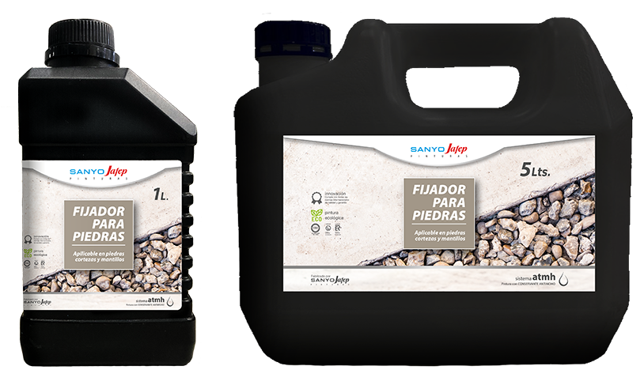

Fijador para piedras
"
DESCRIPCIÓN
Fijador para Piedras es un adhesivo listo al uso, desarrollado para fijar piedras, cortezas y mantillos de hasta 20mm, penetrando en la superficie hasta 20mm de profundidad. Lavar piedras/cortezas/mantillos antes de utilizar el producto. Ideal para caminos peatonales, canteros, decoraciones, macetas, etc. ?Es seguro para toda la familia, mascotas y plantas!
PRESENTACIÓN
1 y 5 litros.
USOS
Regado: Aplicar 2 manos de Fijador para Piedras con regadera utilizando hasta un 1 litro por m? por mano. Acomodar previamente la superficie y compacte antes de aplicar. ? Pulverizado: Aplicar 2 manos de Fijador para Piedras con pulverizador a presi?n, con una aspersi?n fina utilizando hasta un m?ximo de 1 litro cada 2m? por mano. ? Integraci?n: Integre la piedra o el mantillo con 1 parte de Fijador para Piedras por 10 a 25 partes de piedra o mantillo en un balde, con ayuda de cuchara o mezclador el?ctrico hasta lograr una mezcla uniforme y aplique sobre la superficie. ? Duraci?n: 1 a?o en superficies firmes que permitan un libre drenaje de agua. ? Secado: entre manos 6hs a 12hs. Secado final 48hs a 72hs. ? Limpieza: con agua.
RENDIMIENTO
Rendimiento variable hasta 2m? por litro x mano.
DESCRIPCIÓN
Fijador para Piedras es un adhesivo listo al uso, desarrollado para fijar piedras, cortezas y mantillos de hasta 20mm, penetrando en la superficie hasta 20mm de profundidad. Lavar piedras/cortezas/mantillos antes de utilizar el producto. Ideal para caminos peatonales, canteros, decoraciones, macetas, etc. ?Es seguro para toda la familia, mascotas y plantas!
PRESENTACIÓN
1 y 5 litros.
USOS
Regado: Aplicar 2 manos de Fijador para Piedras con regadera utilizando hasta un 1 litro por m? por mano. Acomodar previamente la superficie y compacte antes de aplicar. ? Pulverizado: Aplicar 2 manos de Fijador para Piedras con pulverizador a presi?n, con una aspersi?n fina utilizando hasta un m?ximo de 1 litro cada 2m? por mano. ? Integraci?n: Integre la piedra o el mantillo con 1 parte de Fijador para Piedras por 10 a 25 partes de piedra o mantillo en un balde, con ayuda de cuchara o mezclador el?ctrico hasta lograr una mezcla uniforme y aplique sobre la superficie. ? Duraci?n: 1 a?o en superficies firmes que permitan un libre drenaje de agua. ? Secado: entre manos 6hs a 12hs. Secado final 48hs a 72hs. ? Limpieza: con agua.
RENDIMIENTO
Rendimiento variable hasta 2m? por litro x mano.
$55.000